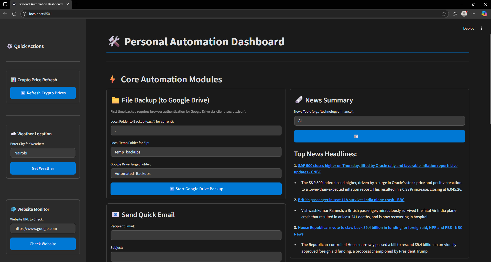
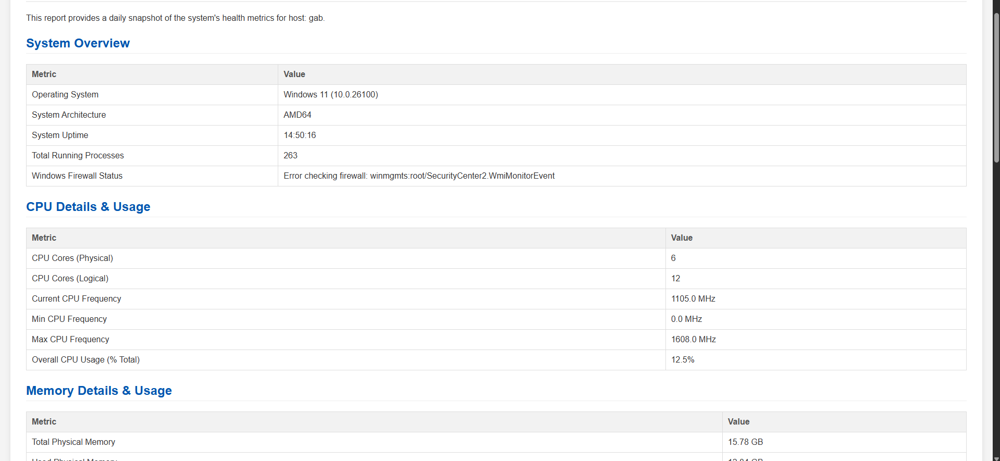

I bring a strong mix of IT support, software development, and system design expertise. I combine technical know-how with a practical, client-focused approach to problem-solving. My background in software design includes user interface planning, system architecture, and translating client needs into functional solutions. I'm also skilled in network and system administration across Windows and Linux platforms, and well-versed with cloud tools like Office 365, Google Workspace, Git, and Docker. With certifications.
My passion lies in ensuring seamless technical operations and providing exceptional user support. I thrive in dynamic environments where I can apply my expertise to diagnose and resolve complex issues, optimize systems, and contribute to a productive technological ecosystem.
Experience
IT Support Specialist Intern | GULF AFRICAN BANK
January 2025 – Present
Provided responsive end-user support and resolved technical issues to ensure smooth day-to-day operations across banking systems.
Delivered on-site and remote technical support for hardware, software, and peripheral devices across multiple departments.
Assisted in the maintenance, configuration, and monitoring of enterprise systems including core banking applications and business information systems.
Supported the IT Service Desk by handling incident reports, logging issues, and escalating where necessary to improve resolution times.
Participated in routine system updates, patching, and maintenance tasks, improving system performance and uptime.
Contributed to network troubleshooting and supported RESTful services in the organization’s internal applications.
OFFICE ACCOUNTANT & IT ASSISTANT | VOI WINNERS HOUSING COOPERATIVE SOCIETY LIMITED
May 2024 – January 2025
Managed daily financial operations, including ledger reconciliation, billing, and budgeting processes.
Oversaw real estate property management tasks, coordinating tenant interactions and lease documentation.
Handled client liaison and customer service, addressing inquiries and providing administrative support to senior management.
Led the IT infrastructure management for the cooperative, including network setup, administration, and hardware/software support.
Designed and implemented digital communication strategies to improve engagement and streamline internal operations.
Proactively troubleshot and resolved IT issues, ensuring minimal downtime and enhancing system reliability for daily business functions.
Explore my portfolio of impactful projects where I've leveraged my skills to create innovative solutions. Each entry includes a concise description, the key technologies I utilized, steps to run and links to the GitHub repository.
Home Lab Setup & Management
Designed and implemented a personal home lab environment for skill development and testing.
Key Activities:
Deployed virtual machines (Windows Server, Linux) using VMware/VirtualBox.
Configured Active Directory, DNS, and DHCP services.
E-Commerce Data Analysis and Customer Segmentation
This project provides a Python script (analyze.py) for comprehensive e-commerce data analysis. It processes transactional data to uncover insights into sales trends, product performance, customer behavior, and geographic sales distribution. The script can generate its own synthetic dataset for demonstration purposes or can be adapted to use real-world e-commerce data.
Key Activities:
Data Simulation: Generates a realistic, large-scale e-commerce dataset.
Data Cleaning & Preparation: Ensures data quality through robust cleaning procedures.
Exploratory Data Analysis (EDA): Visualizes sales trends, product performance, customer spending habits, geographic sales distribution, and payment method preferences.
RFM (Recency, Frequency, Monetary) Analysis: Segments customers based on their purchasing behavior to identify key customer groups.
Synthetic Data Generation: Creates a sample dataset of ~250,000 e-commerce transactions.
Detailed Data Cleaning: Includes handling of missing values, data type conversions, standardization of categorical data, and removal of duplicates or erroneous entries.
Comprehensive EDA:
Sales trends over time (monthly, daily, hourly).
Top product performance (by revenue and quantity).
Sales distribution by product category.
Customer spending analysis (Average Order Value, distribution of total spend).
Geographic sales analysis (by shipping city).
Payment method popularity.
Customer Segmentation using RFM:
Calculates Recency, Frequency, and Monetary scores for each customer.
Segments customers into meaningful categories (e.g., "Champions", "Loyal Customers", "Lost Customers").
Visualizes segment distribution.
This Streamlit application provides a personal dashboard with various automation tools and information widgets. It integrates with several APIs and local system utilities to offer functionalities like cryptocurrency price tracking, weather updates, website monitoring, system resource display, Google Drive backups, email sending, and AI-powered news and document summarization.
Key Activities:
Crypto Price Tracking: Displays current prices for Bitcoin (BTC) and Ethereum (ETH) using CoinDesk and CoinGecko APIs.
Weather Information: Fetches and shows current weather conditions for a specified city using the OpenWeatherMap API.
Website Uptime Monitoring: Checks and reports the status (up/down) of a given website URL.
System Resource Monitoring: Provides a detailed report of system resources including CPU usage, memory usage, disk space, network interface details, and system uptime, utilizing the psutil library.
Google Drive Backup: Backs up a specified local folder (or the entire project) as a ZIP file to a designated folder in Google Drive. Requires Google Drive API setup and authentication.
Email Sending: Allows sending emails via Gmail. Requires Gmail credentials and app password setup.
News Summarization: Fetches top news headlines for a given query using NewsAPI and then uses Google Gemini to provide a concise summary of selected articles.
PDF Document Summarization: Upload a PDF file and get an AI-generated summary of its content using Google Gemini.
Task Triggering: A simple interface to simulate triggering predefined tasks (note: actual background scheduling is not implemented within this app).
Customizable Interface: Styled with custom CSS for a modern look and feel.
A simple, terminal-based REST API client implemented in Python. This script allows you to send HTTP requests to specified URLs, view formatted responses (including headers and body), and save them to a file. It's a lightweight alternative to tools like cURL for basic API testing and interaction directly from your command line.
Key Activities:
Supports common HTTP methods: GET, POST, PUT, DELETE, PATCH.
Allows adding custom request headers.
Supports sending raw data (-d) or JSON (-j) in the request body for methods like POST, PUT, and PATCH.
Automatically sets Content-Type: application/json when JSON data is provided.
Formats and prints the full HTTP response (status line, headers, and body).
Pretty-prints JSON responses.
Allows saving the complete response to a specified output file (-o).
Verbose mode (-v) to print request details before sending.
A Python script to generate PDF invoices. This script prompts the user for company details, client information, itemized services/products, tax rates, and payment terms, then generates a professional-looking PDF invoice.
Key Activities:
Generates PDF invoices from command-line inputs.
Calculates subtotal, tax amount, and total amount automatically.
A classic Snake game where the player controls a snake to eat food and grow longer, while trying to avoid collisions with the walls and its own body.
How to Play:
Objective: Eat the red food pellets to grow your snake and increase your score. The game ends if the snake hits a wall or runs into its own body.
Controls:
Arrow Up: Move the snake up.
Arrow Down: Move the snake down.
Arrow Left: Move the snake left.
Arrow Right: Move the snake right.
R: Restart the game after a "Game Over".
Catch the Falling Squares Online is a simple yet engaging real-time web-based game. Players control a paddle at the bottom of the screen with the objective of catching green squares that fall from the top. Missing a square results in losing a life. The game ends when the player runs out of lives. The game features a client-server architecture, where the game logic is managed by a Python server, and players interact through a web browser client.
Key Activities:
Real-time Gameplay: Game state is synchronized between the server and clients using WebSockets.
Simple Controls: Players move the paddle left or right.
Score and Lives System: Track your performance with a score and a limited number of lives.
Game Over & Restart: Clear indication of game over, with server-side restart capability (desktop server window).
Web-Based Client: Playable in any modern web browser.
Pygame-Powered Server: The backend game logic is handled by a Python application using Pygame.
SHOP YETU3D is a web application that allows users to order pre-designed 3D printed items and submit requests for custom 3D designs. The platform facilitates communication between customers and the design service, handling product Browse, custom request submissions (including file uploads for references), and order placement (currently supporting Pay on Delivery).
Key Activities:
Browse and view pre-designed 3D products.
Submit detailed custom design requests, including:
Project descriptions
Reference images/sketches (uploads supported)
Existing 3D model files (uploads supported)
Place orders for pre-designed items (Pay on Delivery).
The Python Multi-Tool System Monitor is a command-line application that provides several utilities for monitoring system activity on your computer. It currently includes:
Network Traffic Monitor: Tracks overall network usage (bytes sent and received) and displays a list of processes with active network connections.
Wi-Fi Signal Strength Logger: Periodically checks and logs your Wi-Fi signal strength to a file. It supports both Windows and Linux systems.
Clipboard History Manager: Monitors your system clipboard, saves any new content to a local database, and allows you to view and search your clipboard history.
This script is designed to be a helpful companion for users who want to get insights into their system's behavior without relying on heavy third-party applications.
Key Activities:
Network Traffic Monitor:
(a. )System-Wide Usage: Displays the total number of bytes sent and received by your system since the monitor started.
(b. )Active Connections by Process: Lists processes that currently have open network connections and shows the number of connections per process.
Wi-Fi Signal Strength Logger:
(a. )Cross-Platform: Works on Windows (using netsh wlan show interfaces) and Linux (using iwconfig).
Timestamped Logs: Records Wi-Fi signal strength (usually as a percentage) along with a timestamp to a user-specified log file (default: wifi_signal_log.txt).
Customizable Interval: The logging interval can be adjusted.
Clipboard History Manager:
(a. )Automatic Monitoring: Runs in the background to capture any new text copied to the clipboard.
(b. )Database Storage: Stores clipboard entries in an SQLite database (clipboard_history.db).
(c. )CLI Interface:
Start/Stop monitoring.
View the latest clipboard entries.
Search through clipboard history using keywords.
This Python script synchronizes a local folder with a folder on Google Drive. It's designed to upload new files and update existing ones in your Google Drive, mirroring the structure of your local directory.
Key Activities:
Authentication: Securely authenticates with your Google Account using OAuth 2.0. Access tokens are stored locally in token.json for subsequent runs.
Recursive Sync: Syncs the entire directory tree, preserving the subdirectory structure from your local folder to Google Drive.
New File Upload: Detects and uploads new files from the local folder to the corresponding folder in Google Drive.
Update Modified Files: Checks for modifications in existing files (based on last modified timestamp) and updates them on Google Drive if the local version is newer.
Automatic Folder Creation: If the target folder (named after your local folder) or any subdirectories do not exist on Google Drive, the script creates them automatically.
The website showcases Fyt Solutions' services, expertise, company information, and provides a means for potential clients to get in touch. It aims to present a professional image of the company and clearly communicate its value proposition.
Key Activities:
Home: Overview of Fyt Solutions and its main offerings.
About Us: Detailed information about the company's mission, vision, values, and team.
Services: Comprehensive descriptions of services offered.
Case Studies: (Presumably to showcase successful projects - to be developed)
Blog: (Presumably for articles and insights - to be developed)
Contact Us: A way for visitors to reach out to Fyt Solutions.
Privacy Policy & Terms of Service: Legal information.
The Daily System Health Reporter is a Python script designed to automatically gather comprehensive system health metrics, generate a detailed HTML report, and email it to specified recipients. This tool is particularly useful for IT administrators and users who need to monitor the status of their Windows systems regularly.
Key Activities:
1. Comprehensive System Metrics:
(a.) CPU usage (overall, per core, frequency).
(b.) Memory usage (physical and swap).
(c.) Disk usage (total, used, free, I/O per partition) with alerts for low space.
(d. )System uptime.
(e. )Network interface details (IP addresses, speed, data sent/received).
(f. )List of currently logged-in users.
(g. )Total number of running processes.
(h. )Top 5 processes by CPU and memory consumption.
2. Windows-Specific Monitoring:
(a. )Status of critical Windows services (configurable).
(b. )Windows Firewall status.
3. HTML Reporting:
(a. )Generates a well-formatted and easy-to-read HTML report.
(b. )Highlights potential issues like low disk space or stopped services.
4. Email Notifications:
(a. )Automatically sends the HTML report as an email attachment.
(b.)Supports SMTP authentication and TLS encryption.
5. Configurable:
Easily configure report directory, email settings (server, port, sender, recipients), and services to monitor via variables in the script.
Welcome to my blog, where I share insights, challenges, and solutions from my projects.
Here you'll find deeper dives into the technologies I use, the problems I solve, and the lessons I learn.
Building My Personal Automation Dashboard with Streamlit and Python
Published on | Category: Python, Automation, AI
In this post, I'll walk you through the creation of my Personal Automation Dashboard, a Streamlit-based application designed to centralize various daily tasks and information feeds. From tracking cryptocurrency prices to summarizing news with Google Gemini, this project showcases how Python can be leveraged for powerful personal automation.
Understanding Network Monitoring: My Multi-Tool System Monitor Project
Published on | Category: Networking, Python, System Admin
Dive deep into the intricacies of system monitoring with my Multi-Tool System Monitor. This Python command-line application offers insights into network traffic, Wi-Fi signal strength, and even clipboard history. Discover the challenges of cross-platform compatibility and how I tackled them.
Automating Daily Health Checks: The Daily System Health Reporter
Published on | Category: Automation, Windows, System Admin
Learn how I built the Daily System Health Reporter, a Python script that automates the collection of critical system metrics on Windows, generates detailed HTML reports, and emails them. This post covers everything from WMI queries to secure email configurations, crucial for proactive IT management.
Building My Personal Automation Dashboard with Streamlit and Python
Published on | Category: Python, Automation, AI

In today's fast-paced world, efficiency is key. As an IT professional, I'm constantly looking for ways to streamline my workflow and gather information more effectively. This drive led me to develop the **Personal Automation Dashboard** using Streamlit and Python – a versatile application designed to centralize various daily tasks and information feeds into a single, intuitive interface.
Why Streamlit?
I chose Streamlit for its simplicity and speed in turning Python scripts into interactive web applications. It allowed me to focus on the core logic and functionalities without getting bogged down by complex front-end development. The rapid prototyping capability was a huge plus, enabling me to iterate quickly on features.
Key Features and Technologies:
Cryptocurrency Price Tracking: I integrated CoinDesk and CoinGecko APIs to fetch and display real-time prices for Bitcoin (BTC) and Ethereum (ETH). This was a great exercise in consuming external APIs and handling JSON data.
Weather Information: Utilizing the OpenWeatherMap API, the dashboard provides current weather conditions for any specified city. This involved understanding API authentication and parsing weather data.
Website Uptime Monitoring: A simple yet effective feature that checks the accessibility of a given URL, reporting whether a website is up or down. Essential for quick diagnostics.
System Resource Monitoring: Leveraging the `psutil` library, the dashboard displays detailed reports on CPU usage, memory usage, disk space, network interfaces, and system uptime. This provides a quick overview of system health.
Google Drive Backup: This functionality allows backing up local folders as ZIP files to Google Drive. It was a fascinating dive into the Google Drive API, handling OAuth 2.0 authentication, and managing file uploads programmatically.
Email Sending: Integrated Gmail API (or simple SMTP) for sending emails directly from the dashboard. This required careful handling of credentials and understanding email protocols.
AI-Powered Summarization (Google Gemini): This is arguably one of the most exciting features. I used Google Gemini to summarize news headlines fetched from NewsAPI and to provide concise summaries of uploaded PDF documents. This demonstrates the power of integrating large language models into practical applications.
Challenges and Learnings:
One of the primary challenges was managing API keys securely and handling rate limits. I learned the importance of environment variables for sensitive information. Cross-platform compatibility for system monitoring tools also presented interesting puzzles, requiring conditional logic for Windows and Linux. The Google Drive API setup, particularly handling authentication flows, was a significant learning curve but incredibly rewarding to master.
Future Enhancements:
I plan to expand this dashboard to include more integrations, such as calendar management, task scheduling, and perhaps even voice commands. The modular nature of Streamlit and Python makes these additions quite feasible.
This project has been a fantastic way to combine my passion for software development with practical IT solutions. It's a testament to how automation can genuinely simplify daily routines for IT professionals.
Understanding Network Monitoring: My Multi-Tool System Monitor Project
Published on | Category: Networking, Python, System Admin
System monitoring is a critical aspect of IT management, allowing us to keep a pulse on the health and performance of our machines. My **Multi-Tool System Monitor** project, built in Python, is a command-line application designed to provide quick and actionable insights into various aspects of system activity. This blog post delves into its capabilities and the technical journey behind it.
Motivation Behind the Project
Often, I found myself needing quick glances at system metrics without firing up heavy GUI applications. Whether troubleshooting a slow network or just curious about application behavior, a lightweight, terminal-based tool seemed ideal. This led to the idea of consolidating several monitoring functionalities into one script.
Key Components:
Network Traffic Monitor: This component tracks real-time network usage (bytes sent/received) across the entire system. More importantly, it lists processes with active network connections, providing a granular view of who's consuming bandwidth. This was implemented using the `psutil` library, which offers a cross-platform interface for system and process utilities.
Wi-Fi Signal Strength Logger: A crucial tool for diagnosing wireless connectivity issues. This part of the script periodically checks and logs Wi-Fi signal strength. The challenge here was accommodating different commands for Windows (`netsh wlan show interfaces`) and Linux (`iwconfig`), demonstrating robust cross-platform scripting. The data is timestamped and saved to a log file, making it easy to review historical signal quality.
Clipboard History Manager: This seemingly simple feature proved to be incredibly useful. It monitors the system clipboard, saving new content to a local SQLite database. The command-line interface allows users to view recent entries or search through their entire clipboard history. This was a deep dive into clipboard APIs (e.g., `pyperclip` or direct OS calls) and database management with SQLite.
Technical Challenges and Solutions:
The biggest hurdle was ensuring **cross-platform compatibility**. System-level calls, especially for network interfaces and Wi-Fi, vary significantly between Windows and Linux. I used conditional logic (e.g., `sys.platform == 'win32'`) to execute the correct commands. Another aspect was managing concurrent operations, particularly for continuous monitoring like Wi-Fi logging, which required careful handling of threads or asynchronous programming to keep the main application responsive.
For the Clipboard History, maintaining a clean and efficient SQLite database was key. I implemented functions for adding new entries, retrieving, and searching, ensuring quick access to past clipboard data.
Impact and Future Work:
This project has become a go-to tool in my personal toolkit for quick diagnostics and understanding system behavior. It reinforces the power of Python for system administration tasks. Future plans include adding more monitoring capabilities (e.g., specific service status, event log monitoring) and potentially a more interactive TUI (Terminal User Interface) for a better user experience.
Automating Daily Health Checks: The Daily System Health Reporter
Published on | Category: Automation, Windows, System Admin

In the realm of IT operations, proactive monitoring is paramount. Manually checking system health across multiple machines can be tedious and prone to oversight. This is precisely the problem my **Daily System Health Reporter** aims to solve. This Python script automates the collection of comprehensive system metrics, generates a detailed HTML report, and emails it to designated recipients, making daily health checks effortless.
The Need for Automation
As systems grow in complexity, ensuring their optimal performance and stability becomes a full-time job. Automated reporting frees up valuable IT time, provides consistent data points, and allows for early detection of potential issues like low disk space, high CPU usage, or stopped critical services.
How It Works:
Comprehensive Data Collection: The script gathers an extensive array of metrics using Python's `psutil` library and specific Windows commands (via `subprocess` and `wmic`):
CPU usage (overall, per core, frequency)
Memory usage (physical and swap)
Disk usage across all partitions, with built-in alerts for low space
System uptime
Detailed network interface information (IPs, speed, data transferred)
List of logged-in users
Total running processes
Top 5 processes by CPU and memory consumption
Status of critical Windows services (configurable)
Windows Firewall status
Dynamic HTML Report Generation: All collected data is then formatted into a clean, easy-to-read HTML report. This report visually highlights critical information and potential issues, such as a disk running low on space or a vital service being stopped. The use of HTML makes the report universally viewable and easily digestible.
Automated Email Delivery: Once the report is generated, the script uses Python's `smtplib` to send the HTML file as an attachment to a predefined list of recipients. It supports SMTP authentication and TLS encryption for secure transmission.
Implementation Details and Challenges:
A significant portion of this project involved interacting with the Windows operating system programmatically. Leveraging `wmic` commands through Python's `subprocess` module was key to getting specific Windows-centric data like service status and firewall information. Error handling for these external command calls was crucial to ensure the script's robustness.
Designing the HTML report also required careful consideration to ensure readability and effective presentation of data. I focused on clear headings, tables, and conditional formatting to make alerts stand out.
Configurability was another important aspect. I designed the script to allow easy modification of report directories, email settings (server, port, sender, recipients), and the list of services to monitor directly within the script's variables, making it highly adaptable for different environments.
Benefits and Future Scope:
This script has proven invaluable for maintaining oversight over Windows systems, providing daily snapshots of their health without manual intervention. It's a great example of how simple Python automation can lead to significant operational efficiencies.
Future enhancements could include integration with logging systems (e.g., ELK stack), more advanced alerting mechanisms (e.g., sending SMS for critical failures), and potentially a web-based dashboard for aggregated reports across multiple machines.